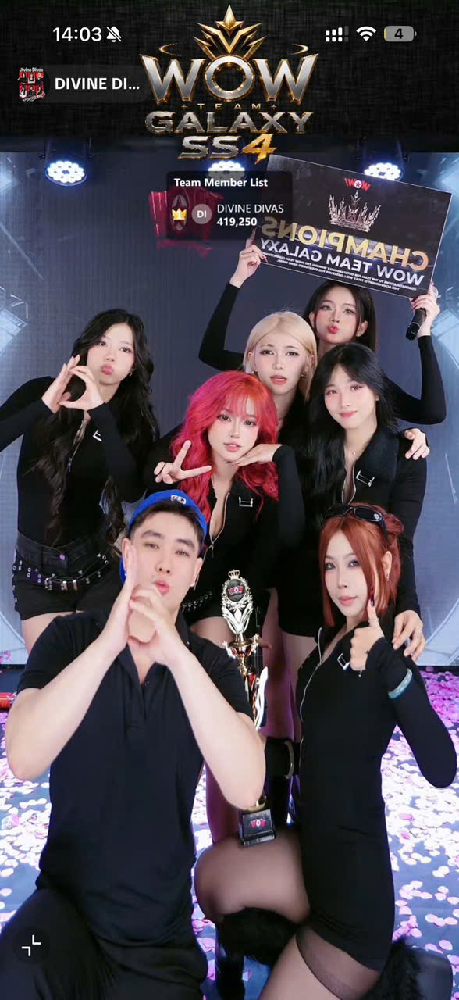
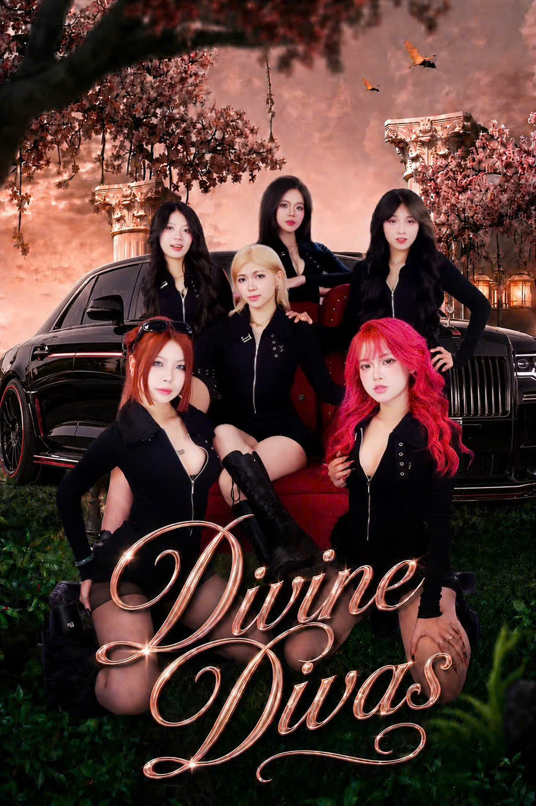

Bold choreography. Unstoppable energy. A collective of dancers redefining what it means to move — one routine at a time. Điệu múa đột phá. Năng lượng không thể dừng lại. Một tập hợp những vũ công định nghĩa lại ý nghĩa của chuyển động — từng tiết mục một.
TikTok FollowersNgười theo dõi TikTok
Total ViewsLượt xem
Routines CreatedTiết mục đã tạo

Divine Divas is a TikTok-born dance collective that blends Afrobeat, hip-hop, dancehall, and contemporary movement into electrifying performances. Born from viral clips and forged on stage, we bring the same energy from your phone screen to live audiences. Divine Divas là nhóm múa ra đời từ TikTok, kết hợp Afrobeat, hip-hop, dancehall và đương đại thành những tiết mục biểu diễn bùng nổ. Từ những clip viral đến sân khấu thực tế, chúng tôi mang năng lượng từ màn hình điện thoại đến khán giả trực tiếp.
The talented dancers behind the moves. Những vũ công tài năng đằng sau những điệu múa.

Singing, telling "lame" jokes to tease everyoneCa hát, kể chuyện cười "nhạt" để trêu mọi người
Wayne is a well-known event MC with a warm, deep voice and sharp improvisation skills. He joined Divine Divas to challenge himself and serve as the group's connector. Off-stage, he's the resident jokester, always pranking the Divas family to keep the laughter flowing. But the moment work begins — formations, stage setup, showtime — he switches to 100% serious mode. Wayne always handles sound checks, scripts, and protects his sisters from any backstage chaos.Wayne là một MC sự kiện có tiếng, sở hữu chất giọng trầm ấm và khả năng ứng biến linh hoạt. Anh gia nhập Divine Divas vừa để thử thách bản thân, vừa đóng vai trò người kết nối. Ngày thường, Wayne là chúa hay đùa, thích bày trò trêu chọc cả gia đình Divas để không khí luôn ngập tiếng cười. Thế nhưng, cứ hễ bước vào công việc, ráp đội hình hay lên sân khấu, anh lập tức bật chế độ "nghiêm túc 100%". Wayne luôn là người kiểm tra âm thanh, kịch bản, và bảo vệ các em gái trước mọi sự cố hậu trường.
His ability to fire off English and hype up the crowd is incredible, turning every performance into a professional live show thanks to his hosting talent.Khả năng "bắn" tiếng anh và khuấy động phong trào cực đỉnh, biến mọi buổi biểu diễn của nhóm thành một liveshow chuyên nghiệp nhờ tài dẫn dắt của mình.
Suzy holds the record for being the quietest member. She can sit silently through an entire practice, but don't mistake her for being aloof — she's actually hilarious with an "unleashed" laugh whenever the sisters play around. She's the "speak little, do much" type, always putting 100% focus and seriousness into dancing. After months, from someone who had never stood on stage, Suzy transformed with decisive moves, channeling all her pent-up energy from silence into every body movement.Suzy giữ kỷ lục là thành viên ít nói nhất nhóm. Cô nàng có thể ngồi im lặng suốt cả buổi tập, nhưng đừng tưởng Suzy khó gần, thực chất cô cực kỳ vui tính và sở hữu điệu cười "thả ga" mỗi khi các chị em làm trò. Thuộc tuýp người "nói ít làm nhiều", Suzy luôn đặt 100% sự tập trung và nghiêm túc vào công việc nhảy. Sau nhiều tháng, từ một người chưa từng đứng trên sân khấu, Suzy đã lột xác với những bước nhảy dứt khoát, dồn hết mọi năng lượng dồn nén từ sự im lặng vào từng chuyển động cơ thể.
During exhausting practices, while Naomi worries about sleeping and Astrid complains, Suzy quietly opens her phone to invite everyone for a few rounds of games to lift spirits. The moment she steps into formation, she instantly switches to warrior mode — incredibly captivating.Giữa những buổi tập mệt mỏi, trong khi Naomi lo ngủ còn Astrid lo than thở, Suzy sẽ lẳng lặng mở máy rủ mọi người làm vài ván game để giải sầu. Cứ hễ đứng vào đội hình nhảy, cô nàng lập tức bật chế độ "chiến thần" cực kỳ cuốn hút.
Singing, dancing, shopping, and sleeping 24 hours a dayCa hát, nhảy, mua sắm và có thể ngủ 24 tiếng mỗi ngày
Zika is the final piece — the youngest who completed the 7-member lineup of Divine Divas! Her arrival brought an energy that's adorable, mischievous, and fiercely loyal all at once. Zika is the definition of a "chaotic little seed" with explosive energy. She has a mouth that runs at full capacity, talking nonstop from the moment she walks into practice until she leaves, always dropping bold statements that get the whole team piling on to tease her. Her fatal weakness is short-term memory — she forgets the next move right after learning the previous one, making her the team's exclusive "forgot-the-routine expert." But Zika has heroic blood. Whenever she sees anyone bullying her siblings or the team faces trouble, she's the first to charge into battle.Zika – mảnh ghép cuối cùng – cô em út của nhóm, người khép lại đội hình 7 thành viên chính thức của Divine Divas! Sự xuất hiện của Zika mang đến một nguồn năng lượng vừa đáng yêu, vừa tinh nghịch, lại vô cùng nghĩa khí. Zika chính là định nghĩa của một "mầm non vô tri" mang năng lượng ồn ào hủy diệt. Cô nàng sở hữu chiếc miệng hoạt động hết công suất, nói không ngừng nghỉ từ lúc bước vào phòng tập cho đến khi ra về, chuyên phát ngôn những câu "mạnh miệng" để rồi bị cả nhóm đè ra trêu chọc. Điểm yếu chí mạng của cô nàng sau nhiều tháng tập luyện là bộ nhớ ngắn hạn – cứ học xong động tác trước là quên luôn động tác sau, biến cô thành "chuyên gia quên bài" độc quyền của nhóm. Thế nhưng, Zika lại sở hữu máu "anh hùng". Hễ thấy ai bắt nạt các anh chị, hoặc nhóm gặp rắc rối, cô út sẽ là người đầu tiên lao ra "chinh chiến" bất chấp đúng sai.
Sometimes when the whole team is deeply focused, Zika suddenly screams at the top of her lungs for absolutely no reason. Despite her chaos, she adores her siblings and considers Divine Divas her second home. Behind the silly pranks and endless talking is a girl who always puts the team's feelings above everything else.Nhiều lúc cả nhóm đang tập trung cao độ, Zika bỗng dưng hét lên một tiếng thật to không vì điều gì cả. Tuy vô tri nhưng Zika siêu thương các anh các chị và coi Divine Divas như ngôi nhà thứ hai của mình. Ẩn sau những trò hề vô tri và những tràng nói không ngừng là một cô bé luôn đặt tình cảm của nhóm lên trên hết.
Watching movies, listening to musicXem phim, nghe nhạc
Anyone meeting Amy for the first time thinks she's cold, quiet, and hard to approach. But after just 10 minutes, everyone realizes she's extremely fun, adorable, and full of witty inside jokes. Recognized as the gentlest member who rarely raises her voice, Amy has incredibly strong protective instincts. She's always the first to step up, solve problems, and shield the team — the most stable emotional pillar Divine Divas has.Ai mới nhìn Amy lần đầu cũng tưởng cô là người lạnh lùng, ít nói và khó gần. Thế nhưng, chỉ cần tiếp xúc quá 10 phút, tất cả sẽ nhận ra một Amy cực kỳ vui tính, dễ thương và có những câu đùa ngầm rất "mặn". Nhận diện là người hiền lành nhất nhóm, ít khi lớn tiếng với ai, nhưng Amy lại sở hữu bản năng bảo vệ cực kỳ mạnh mẽ. Cô luôn là người đứng ra giải quyết rắc rối, che chở và là chỗ dựa tinh thần vững chắc nhất cho cả đội.
Her dance learning is a bit more "leisurely" than everyone else's. But every time Amy misses a beat or dances wrong, she turns it into a hilarious, charming moment that releases all the tension in the practice room.Học vũ đạo và bắt nhịp có phần "thong thả" hơn mọi người. Thế nhưng, mỗi lần Amy nhảy sai hay trễ nhịp, cô lại tự biến nó thành một khoảnh khắc gây cười đầy duyên dáng để giải tỏa căng thẳng cho cả phòng tập.
Constantly changing makeup looks and hair colors, street style outfits, learning new random skillsThay đổi layout makeup và màu tóc liên tục, phối đồ street style, học các tài lẻ mới
At first glance, Astrid is easily misunderstood as "sharp-tongued and hard to approach" because of her fierce face and cool fashion sense. But she's actually carefree, super cute, and incredibly thoughtful. Her mouth is always saying "I'm so tired, I'm not practicing anymore!" but the moment the music plays, Astrid locks in at 200% energy with the most precise execution. She not only sings well but her dancing has improved dramatically, making her one of the best movers in the group.Mới nhìn qua, Astrid dễ bị hiểu lầm là một cô nàng "đanh đá, khó gần" vì gương mặt sắc sảo và gu thời trang cực chất. Thế nhưng, cô lại là một người phóng khoáng, siêu dễ thương và cực kỳ tinh tế. Miệng thì lúc nào cũng than "Mệt quá, không tập nữa đâu!" nhưng cứ nhạc lên là Astrid lại tập trung 200% năng lượng, thực hiện động tác chuẩn xác nhất. Cô không chỉ sở hữu kỹ năng hát mà vũ đạo cũng thăng tiến vượt bậc, trở thành một trong những người nhảy đẹp nhất nhóm.
She quietly helps everyone. Though Astrid complains a lot, she always looks out for and supports the people around her.Rất hay giúp đỡ mọi người một cách thầm lặng. Tuy Astrid hay cằn nhằn nhưng luôn quan tâm giúp đỡ mọi người.
Emtinee is a true dancer and the most beautiful mover in Divine Divas. She possesses razor-sharp dance skills, an incredible singing voice, and highly original choreographic thinking. Emtinee always likes to show off her "annoying" side and appears tough and independent. But that prickly exterior is betrayed by an incredibly cute, natural voice. Even though she's not the youngest and always wants to prove her maturity, the fascinating contrast between her fierce look and her "baby doll" voice has made the whole team treat her like a baby to dote on and protect.Emtinee là dancer thực thụ và là người nhảy đẹp nhất Divine Divas. Cô sở hữu kỹ năng vũ đạo sắc lẹm, hát cực hay và tư duy dựng bài đầy cá tính. Emtinee luôn thích thể hiện sự "đáng ghét", và tỏ ra mình là người vô cùng mạnh mẽ, độc lập. Thế nhưng, lớp vỏ bọc gai góc đó lại bị phản bội bởi một giọng nói siêu cấp dễ thương, tự nhiên. Dù không phải thành viên nhỏ tuổi nhất và luôn muốn chứng tỏ sự trưởng thành, nhưng chính sự đối lập thú vị giữa diện mạo cá tính và chất giọng "búp bê" đã khiến cả nhóm xem cô như một "em bé" để cưng chiều và bảo vệ.
Throughout the group's journey, Emtinee has been the professional technical engine. She's incredibly bold in the practice room. Every time the music starts, she becomes a true dance warrior, carrying all the hardest routines and serving as the technical backbone for the entire team.Trong suốt hành trình của nhóm, Emtinee chính là đầu tàu kỹ thuật chuyên nghiệp. Cô nàng cực kỳ bản lĩnh trên sàn tập. Mỗi khi nhạc nổi lên, cô là một chiến thần vũ đạo thực thụ, gánh toàn bộ những đoạn nhảy khó nhất và làm chỗ dựa chuyên môn cho cả đội.
Sleeping everywhere (especially napping on sisters' shoulders during breaks), snacking, and playing pranks on everyoneNgủ mọi lúc mọi nơi (đặc biệt là ngủ gục trên vai các chị em lúc giải lao), ăn vặt, và bày trò trêu chọc mọi người
If Amy is the quiet support, Naomi is the group's loudspeaker. She talks endlessly, everywhere, and possesses a basket of quirky, hard-to-handle behaviors — like suddenly striking a meme pose mid-dance or belting out an opera note completely off-key. Even though she's the center of the group's teasing, Naomi is extremely perceptive. She's always the first to notice when someone is tired or feeling down, immediately running over to hug them and acting silly until they laugh again.Nếu Amy là chỗ dựa thầm lặng thì Naomi chính là cái loa phát thanh của nhóm. Cô nàng nói luôn miệng, nói mọi lúc mọi nơi và sở hữu một rổ những hành động kỳ quặc, khó đỡ (như đang tập nhảy bỗng nhiên đứng tạo dáng meme hoặc cất giọng hát opera tone lệch). Dù là tâm điểm để cả nhóm chọc ghẹo, Naomi lại là người cực kỳ tinh tế. Cô luôn là người đầu tiên nhận ra khi có ai đó trong nhóm mệt mỏi hay xuống tinh thần, lập tức chạy đến ôm ấp, làm trò hề để người đó bật cười mới thôi.
Her dance skills might fluctuate with her mood, but her ability to "sleep anywhere" right on the practice floor after exhausting sessions has become legendary in the group.Khả năng vũ đạo có thể còn lên xuống tùy tâm trạng, nhưng khả năng "ngủ bất chấp" ngay trên sàn tập sau những giờ nhảy mệt nhoài của Naomi đã trở thành huyền thoại của nhóm.
From viral TikTok drops to creative collaborations — every routine tells a story. Từ những clip viral trên TikTok đến những sáng tạo hợp tác — mỗi tiết mục đều kể một câu chuyện.
Catch our latest routines, behind-the-scenes, and viral drops across every platform. Xem những tiết mục mới nhất, hậu trường và clip viral trên mọi nền tảng.